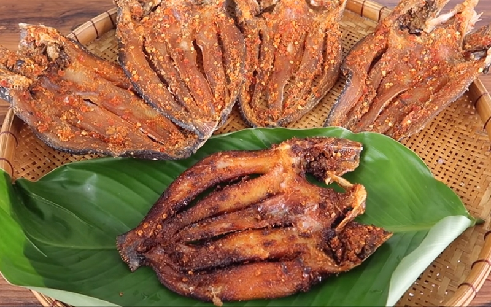

Thông tin về món ăn
Nguồn gốc
Từ vùng sông nước Nam Bộ, nơi người dân tận dụng nguồn cá lóc dồi dào để chế biến, bảo quản và thưởng thức. Bắt nguồn từ nhu cầu lưu trữ cá sau mùa nước nổi, khô cá lóc đã trở thành một món ăn dân dã, đặc sản mang hương vị đặc trưng của quê hương.
Nguyên liệu chính
- Cá lóc tươi: Chọn cá lóc đồng để đảm bảo chất lượng, thịt chắc, da dày và không có mùi tanh.
- Gia vị: Muối, ít đường, tiêu, ớt.
Đặc điểm
- Hương vị: Ngọt tự nhiên, dai vừa phải, mặn ngọt hài hòa.
- Cách thưởng thức: Chiên hoặc nướng trên than, ăn kèm cơm nóng hoặc làm món nhậu.
- Trải nghiệm: Vị dai, ngọt, thơm, dễ ăn, là món quà dân dã nhưng đầy tinh tế, mang hương vị miền Tây đặc trưng.